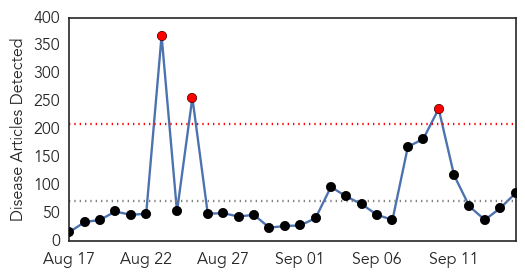
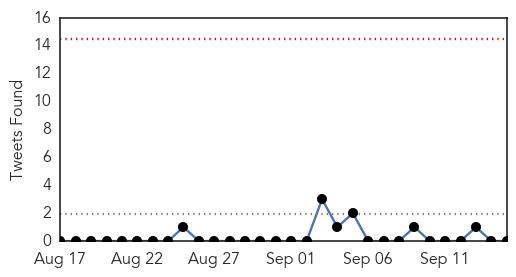
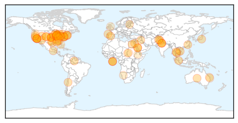
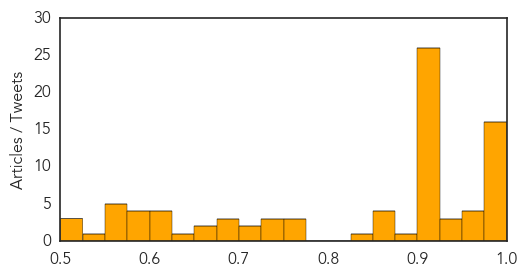

Toggle navigation
Early Warning
Daily Alerts
Unknown
Sep 15, 2014
Compare to:
-
Dengue Fever
Hemmorhagic Fever
Mold/Fungal Infection
Influenza
Meningitis
Pertussis / Whooping Cough
Middle East Respiratory Syndrome
Cholera
Hepatitis
Chikungunya
Yellow Fever
Bubonic Plague
West Nile Virus
Swine Flu
Ebola
Measles
Mumps
30 Day Trends
Web: 3
alerts
, 0
warnings
Twitter: 0
alerts
, 0
warnings
Top Articles:
Showing top 50 articles...
0.999
Kids' Severe Respiratory Virus Confirmed in Northeast
0.998
Maine child being tested for respiratory virus spreading in Northeast — Health — Bangor Daily News — BDN Maine
0.997
At least 12 children diagnosed with respiratory illness in NY
0.997
Enterovirus may be cause of ill children in Connecticut
0.996
Respiratory virus Enterovirus D68 hits the Northeast
0.995
Enterovirus D68 outbreak: Who is at risk?
0.994
Rapidly Spreading Children’s Virus Suspected At Hospital In Hartford « CBS New York
0.993
Alabama children test positive for enterovirus
0.992
Rare respiratory illness confirmed in 10 states, expands to New York and Alabama
0.990
Officials offer primer on enterovirus outbreaks across US
0.990
Arizona children may be sickened with enterovirus
0.987
No EV-D68 in Texas, But Parents Stay Alert
0.983
Q&A: Enterovirus D68 outbreak
0.982
Visitor restrictions implemented at MidMichigan Health facilities
0.980
Mers virus: Saudi Arabia camel traders unalarmed by disease
0.977
Enterovirus D-68 could be cause of surge of admissions at Ontario hospital
0.972
Jaundice affected numbers on rise
0.965
Mers virus: Inside Saudi disease command and control centre
0.957
No, You Do Not Have Chronic Lyme Disease
0.956
WALB.com, South Georgia News, Weather, Sports
0.946
Chickenpox case confirmed at Carmel High School
0.942
Nine suspected cases of Enterovirus now in Wisconsin
0.930
No significant number of enterovirus cases suspected in Shasta County, though monitoring is an
0.924
Enterovirus D-68 could be cause of surge of admissions at Ontario hospital
0.917
Chicago Tribune
0.917
Chicago Tribune
0.917
Chicago Tribune
0.917
Chicago Tribune
0.917
Chicago Tribune
0.917
Chicago Tribune
0.917
Chicago Tribune
0.917
Chicago Tribune
0.917
Chicago Tribune
0.917
Chicago Tribune
0.917
Chicago Tribune
0.917
Chicago Tribune
0.917
Chicago Tribune
0.917
Chicago Tribune
0.917
Chicago Tribune
0.917
Chicago Tribune
0.917
Chicago Tribune
0.917
Chicago Tribune
0.917
Chicago Tribune
0.917
Chicago Tribune
0.917
Chicago Tribune
0.917
Chicago Tribune
0.910
Colorado doctors warn that sepsis can be a hidden killer in hospitals
0.910
The world windows to Thailand
0.908
Sask. health officials closely monitor enterovirus D68 situation
0.893
MOM STOP: Prevention is the best way to ward off illness
Top Tweets:
0.624
Presentan avances y logros de Alianzas Estratégicas en Prevención y Tratamiento: La presentación de un Resumen... http://t.co/SIa2wifBDO
0.544
Un cafesito despues de la uni üôè
0.534
Seasonal flu is a contagious respiratory illness. Approximately 5-20% of U.S. residents get flu each yr. Getafluvax http://t.co/1fxvoOyKoK
Web/News Articles

Tweets

Article Locations

Article Confidences
